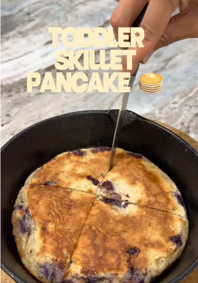

This blueberry banana skillet pancake is made with simple pantry ingredients…

Ingredients
- 1 ripe banana
- 1/3 cup all-purpose flour
- 1/2 tsp baking powder
- 1 egg
- Dash of cinnamon (optional)
- Small handful of blueberries, cut in half or lightly smashed
- Unsalted butter for the pan
Steps
- Mash the banana, then mix in the flour, baking powder, egg, and cinnamon.
- Fold in the blueberries.
- Butter a skillet and cook over low-medium heat until bubbles form on top, then flip and cook until both sides are golden brown.
- Let cool before serving.
- Simple ingredients, quick to make, and always a hit!
Recipe text as written by @busymamaeasybites on TikTok. Open original